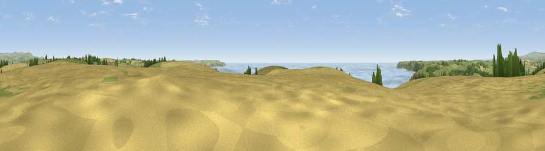

Viewpoint near Mothecombe
#2158 in England · top 5% of its area beats it · near MothecombeWhere it is
The exact computed spot (SX 62462 46725). Click the marker for map links.
The view, rendered

A 360° render of this exact spot computed from the terrain model, tree cover and land cover — summer colours, afternoon light, calibrated against photographs of famous viewpoints. Real trees, hedges and buildings will differ in detail.
The panorama
Grey silhouette: terrain skyline in each direction (720 bearings, Earth curvature and refraction included). Dashed green: skyline with trees (+15 m) and buildings (+8 m) as obstacles. Blue strip: how far the ground is visible on each bearing.
Where the view opens
Wedge length = distance to the farthest visible ground on that bearing (vegetation-aware). Rings at 10, 25 and 50 km.
What fills the view
41% cropland · 31% grassland · 23% water · 5% woodland
Angular shares of the visible panorama (visual magnitude), not map area. Landscape diversity 0.54 (0–1 Shannon).
Key numbers
More beautiful places nearby
The staircase of upgrades: each row has a higher view potential than everything closer. Driving times are estimates from straight-line distance, calibrated against real road routing — check an actual route before setting out.
| Place | Direction | Drive | Score |
|---|---|---|---|
| Viewpoint near Mothecombe | S · 1 km | ~2 min | 78.6 |
| Viewpoint near Newton Ferrers | W · 5 km | ~11 min | 79.5 |
| Viewpoint near Hope | SE · 10 km | ~19 min | 84.4 |
| Viewpoint near East Prawle | SE · 18 km | ~31 min | 84.6 |
| Pencarrow Head | W · 47 km | ~68 min | 86.0 |
| Viewpoint near Stenalees | W · 63 km | ~86 min | 88.0 |
| Viewpoint near Crackington Haven | NW · 68 km | ~92 min | 88.1 |
| Golden Cap | ENE · 90 km | ~115 min | 88.7 |
50.30439, -3.93270 · source: screening · position refined by local search. Computed location — check access rights before visiting.